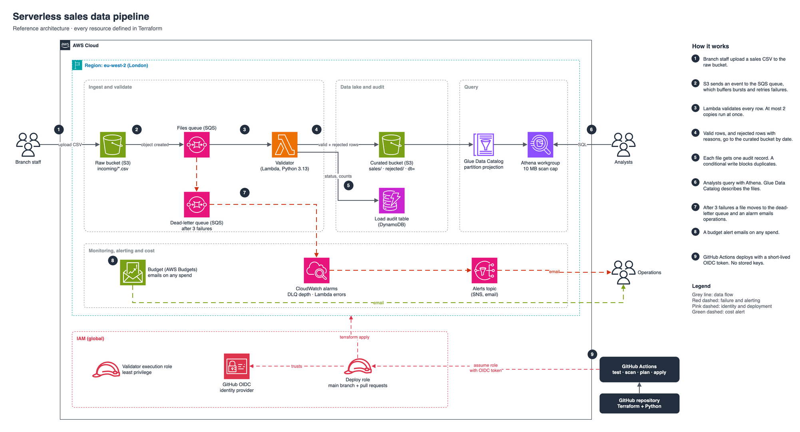

Walkthrough in five parts: what each piece does, why it was built that way, and how to talk about it in an interview.
Repo: github.com/gumagatsby/aws-serverless-sales-pipeline

weekly-sales-w41.csv into the raw S3 bucket under incoming/..csv under incoming/ and sends an "object created" message to the SQS queue. Files elsewhere in the bucket, or not ending in .csv, are ignored.ABC-123, units above zero, revenue and cost not negative, no duplicate rows.curated/sales/dt=<today>/. Bad rows go to curated/rejected/dt=<today>/ with a list of every reason.LOADED, LOADED_WITH_REJECTS or FAILED), the counts and the finish time.What you saw live: the sample file had 10 rows, 5 loaded and 5 rejected. Re-uploading it was skipped as a duplicate.
| File | Job | Why separate |
|---|---|---|
rules.py | Pure validation: takes text, returns loaded rows, rejected rows and reasons. | No AWS code, so it's tested on a laptop in milliseconds (tests/test_rules.py). Business rules are easy to read, change and explain. |
handler.py | Plumbing: reads from S3, writes to S3 and DynamoDB, handles retries. | Keeps the AWS wiring in one place. If the storage changed, the rules wouldn't. |
rules.py_check_row collects all the problems in a row, so a branch fixes everything in one go.Decimal("59.88") stays exact. Floats can turn it into 59.879999.handler.py# Idempotency: write only if this file_id has never been seen
audit.put_item(Item={...}, ConditionExpression="attribute_not_exists(file_id)")
file_id = key + ETag. The ETag is S3's fingerprint of the file contents. The same file uploaded twice has the same ID and is skipped. A corrected file has a new ETag and loads.batchItemFailures. Lambda tells SQS exactly which messages failed, so only those retry and the successful ones aren't processed twice.{"event": "file_processed", ...}), so it can be searched and turned into metrics.| File | What it creates | Points to notice |
|---|---|---|
versions.tf | Provider and backend | State lives in S3 with use_lockfile = true, which is native S3 locking, so no DynamoDB lock table is needed (Terraform 1.10+). |
storage.tf | 3 buckets (raw, curated, Athena results), audit table | for_each builds three buckets from one block. Every bucket blocks public access, is encrypted and refuses non-HTTPS requests. Lifecycle rules expire raw files (30 days) and query results (7 days). |
ingest.tf | Queue, dead-letter queue, S3 notification, Lambda, IAM role | The queue policy only accepts messages from this bucket in this account. The Lambda role can read only incoming/ and write only the curated bucket. That's least privilege. |
catalog.tf | Glue database and tables, Athena workgroup, saved queries | Partition projection: Athena works out the dt= folders itself, so no paid crawler is needed. Each query is capped at a 10 MB scan. |
monitoring.tf | SNS topic, 2 alarms, budget | The budget emails at 1% of $1, so any spend at all triggers it. |
bootstrap/ | State bucket, GitHub OIDC provider, deploy role | Applied once from the laptop. Its own state is kept locally (backed up to docs/bootstrap.tfstate, never committed). |
| Command | Meaning |
|---|---|
terraform init | Download providers and connect to the state backend |
terraform plan -out=tfplan | Show what would change and save that exact plan |
terraform apply tfplan | Apply exactly what was reviewed, nothing more |
terraform fmt / validate | Tidy formatting, check the syntax and references |
terraform providers lock -platform=… | Record provider checksums for Mac and Linux so CI can install them |
.github/workflows/ci.yml)| Job | Runs | Stops the deploy if |
|---|---|---|
| test | pytest on the validation rules | A rule is broken |
| checks | terraform fmt, validate, Checkov security scan | The code is badly formatted, invalid or insecure |
| deploy | Plan on pull requests, plan and apply on merge to main | (runs only if both jobs above pass) |
id-token: write allows).repo:gumagatsby@266259364/aws-serverless-sales-pipeline@1422026046:ref:refs/heads/main.The newer Checkov in CI raised 21 findings. One was real (the curated bucket had no lifecycle rule) and was fixed. The rest need paid features (customer-managed KMS keys, cross-region replication, access logs, versioning) or were a false positive. Each is listed in .checkov.yml with its reason. Skipping a check with a written reason is a decision. Ignoring it silently is a risk.
Full reasoning is in docs/decisions.md. These are the questions an interviewer is most likely to ask, with answers in your own terms.
"Why put SQS between S3 and Lambda?"
With a direct trigger, a failure retries twice and is then lost unless you add a failure destination. With a queue, every file is a message: it retries, it ends up in a dead-letter queue I'm alerted about, and bursts are smoothed out. One extra component, free at this volume.
"What happens if the same file arrives twice?"
The audit write is conditional on the file ID (key plus ETag) not existing. The second attempt fails that condition and is skipped, so sales are never double-counted. I tested it live: the re-upload logged skipped_duplicate.
"Why JSON Lines and not Parquet?"
Parquet is better at scale, but writing it from Lambda needs pyarrow, about 100 MB and a layer. At weekly branch volumes gzip JSON is small and Athena reads it fine. I'd switch to Parquet, probably in a Glue job, at millions of rows a day.
"How do you keep it secure?"
No public buckets, encryption at rest, HTTPS only, a least-privilege Lambda role, no long-lived keys anywhere (OIDC pinned to the repo's IDs), and a Checkov scan on every change.
"How do you control cost?"
Serverless only, so nothing runs when idle. No KMS customer keys, NAT gateways or crawlers. Lifecycle expiry on raw files and query results. A 10 MB per-query cap in Athena. Budget alerts on the first cent.
"What would you change for a real client?"
Turn on what I skipped for cost: customer-managed KMS keys, point-in-time recovery, access logging, versioning, longer log retention. Scope the deploy role down from PowerUser, add a staging environment with a manual approval before production, and move the branch list into a reference table the business can maintain.
"How would someone support this?"
The runbook (docs/runbook.md) covers each alarm, how to find a failed file, how to replay the dead-letter queue (safely, because processing is idempotent), and how to answer "my file did nothing".
| Check | Result |
|---|---|
| Unit tests | 4 of 4 pass, locally and in CI |
| Checkov | Passes in CI, with exceptions documented |
| End-to-end load of the sample file | 5 loaded, 5 rejected, audit record written |
| Athena saved queries | Both return correct results |
| Duplicate upload | Skipped; still 1 audit record |
| CI/CD deploy via OIDC | Green: tests, checks, deploy |
| Email alert subscription | Confirmed; test alert sent |
| CloudWatch alarms | Both OK and enabled |
| Budget | $1 limit, actual spend $0.00, alerts at 1% actual and 100% forecast |
| Account plan | Free plan, active |
# Upload the sample aws s3 cp sample-data/weekly-sales-w41.csv s3://<raw bucket>/incoming/weekly-sales-w41.csv # See the audit record aws dynamodb scan --table-name ssp-load-audit --region eu-west-2 # Watch the Lambda logs live aws logs tail /aws/lambda/ssp-validator --region eu-west-2 --follow # Then in the Athena console: workgroup ssp-sales, Saved queries, # daily-margin-by-branch and rejection-reasons
Get the bucket name with terraform -chdir=terraform output -raw raw_bucket.